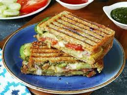

Veg Cheese Toast Sandwich

A Bombay style delicious stuffed sandwich made with a filling of mix vegetables, topped with cheese and grilled or toasted.
Ingredients
For sauteing cashews
- 6 Bread Slices
- Sandwich Green Chutney as needed RECIPE HERE
- Sandwich Masala Powder as needed RECIPE HERE
- Cucumber Slices as needed
- Tomato Slices as needed
- Onion Slices as needed
- Boiled Sliced Potatoes as needed
- Boiled Sliced Beetroot as needed
- 3 Cheese Slices or grated cheese as needed
- Butter as needed
Steps
- Take two bread slice, spread some butter on both the slices.
- Spread some chutney over the buttered side of both the bread.
- Arrange veggies and sprinkle sandwich masala over each veggies.
- Place some cheese over it.
- Cover with other slice of bread butter and green chutney side down.
- Spread some butter over it.
- Place it over a heated toast pan butter side down . Cover and toast till golden.
- Cut into wedges and serve.
Return to Main Page